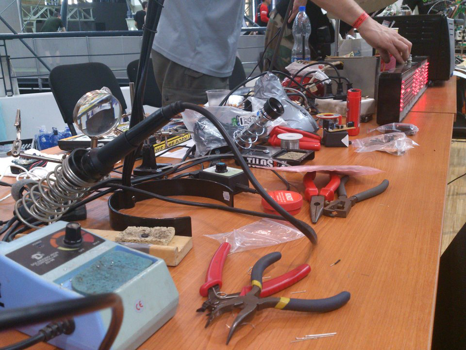

Független Magyar Tudásközpont
A HACKERSPACE
A HACKERSPACE koncepció alapján több száz kreatív műhely működik sikeresen a világban. Bár a hacker kifejezés használata azt sugalhatja, hogy ezekben a műhelyekben fókusz az informatikai bizonságon van, azonban legtöbb hasonló intézményben a biokutatásokon át egészen a rakétakisérlekig minden bütykölhető dolgot megpiszkálnak. A koncepció merít az elmúlt évek szabad szoftveres fejlesztő-közösségek müködési mintáiból. Ezek az online fejleszői csoportok önkéntesen szerveződtek és dolgoztak olyan célokért mint a linux, az apache webszerver és több tízezer egyéb szoftveres megoldás. A sikeres külföldi példák azt mutatják, hogy ezen alapelvek mentén a hús-vér világban is müködő, produktív és kreatív munka tud folyni. Csak két példa friss innovációra az európai hackerspacek életéből a Metalabból származó soup.io idén Európai Startup díjat nyert, a c-baseben alapított német kalózpárt 2%-ot ért el a német parlamenti választásokon, ez társadalmi innováció.
Egy hackerspace-nek két fontos szereplője van: az állandó hely és a közösség. A közösség fentartja és használja a helyet. A közösség a hely fentartásán túl további közös és megosztott erőforrásokra is szert tehet, ilyenek a közös szerszámok, eszközök, tudás, infrastruktúra, szolgáltatások. Jó példa erre egy drágább Rapid Prototyping eszköz, mint pl egy 3d nyomtató. Egyedül nehezen tudunk egy ilyet megfinanszírozni magunknak. Ha mégis a kihasználtsága valószínüleg nem hozná meg a beruházást. Nem így, ha többen állunk össze egy ilyen eszközre.
Ezek alapján a Független Magyar Tudásközpont:
Egy non-profit innovációs közösség. A szabad és hatékony információáramlásnak, online és lehetőség szerint offline infrastruktúrát (helyszínt és eszközöket) biztosít az alapítók, más tagok valamint innovatív és rokonszenves alkotások, projektek számára.
ALAPELVEK:
Függetlenség
Bármennyire is kényelmes egy nagy szponzor 100%-os finanszírozása, ez olyan erős függőséget jelent, amely nagymértkében korlátozza a szabad ötletelést (nem ki akarná magára haragítani az eltartóját). Ebből fakad a fentarthatóság alapelvének sérülése is, egy nagy támogató csödbe mehet, meggondolhatja magát, változhat a politikai helyzet, sok minden történhet, ami veszélyezteti a fentarthatóságot. Ezért fontos, hogy a szervezet önállóságát megőrizze. Belátható, hogy ez erősen szűkítheti a rendelkezésre álló erőforrásokat, ám hosszútávon mindenképpen kifizetödő a folyamatos tanulással is járó fejlődés.
Fentarthatóság
A közösség alappillérének fentarthatónak kell lennie. A fentarthatóság nem jöhet kívülről, hiszen ekkor már külső forrástól függ a fentarthatóság. Ez azt jelenti, hogy a helyszín bérlését a tagsági díjból kell finanszírozni.
Önkéntesség - motiváció - (explicit) hierarchia mentesség
A Függetlenség alapelvéből következik, hogy a tagságnak önkéntes - szimbolikus - anyagi áldozatot kell hoznia a közösség fenntartásáért. Ez az áldozat elkötelezettséget is biztosít. Várható, hogy az anyagi hozzájáruláson túl is részt akarunk venni a közösség életében. Ez a részvétel további - immár nem anyagi - hozzájárulás is. A motivációnak tehát eleve meg kell haladnia egy bizonyos belépési korlátot: "ez annyira fontos nekem, hogy fizetni és tenni is hajlando vagyok érte"
Meritokrácia
Az önkéntesség önmagában azt jelenti, hogy a motiváció belülről fakad. Ez azt vonja maga, hogy a közösséget nem lehet semmire sem kényszeríteni vagy utasítani. Hiszen az önkéntesek "fogják a labdájukat és máshol fociznak". Ebből kifolyólag a hagyományos hierarchiák nem müködnek az ehhez hasonló önkéntes közösségekben. A közösség ennek ellenére rendelkezik véleményvezérekkel, ez azonban a kiérdemelt tiszteleten és a közösségért munkában elért eredményeken múlik. Ez a meritokrácia.
Belépési korlátok eltörése
Sok olyan kutatási terület van, ahol az igazi innováció akkor kezdődött el, amikor hobbitudósok a garázsukban tudtak kisérletezni az adott területtel. A belépési korlátok gyakran kezdeti beruházások formájában tornyosulnak elénk. Ilyen például a hardver gyártás, a bio kutatások, a rapid prototyping, a kémiai kisérletek. Teljesen kiépített műhelyt, labort a legkevesebben tudunk magunknak megengedni. Ezt a fajta belépési korlátot egy közös befektetéssel már finanszírozhatóvá válik, ráadásul beruházás kihasználtsága is jóval hatékonyabb, hiszen több felhasználó miatt kevesebbet áll üresben. Hasonló belépési korlátot jelent a tudásbeli hiány, a közösség szerteágazó tapasztalatai és ismeretrendszere ezt a korlátot is megpróbálja lerombolni.
Transzparencia
Minden projekt, döntés a nyilvánosság elött zajlik. Ez arra ösztönöz, hogy minden tisztán és korrekten folyjon. A transzparencia fontos alapfeltétele a függetlenségnek is, hiszen meggátolja a függetlenség elvesztését, ezáltal kockáztatva a fentarthatóságot és az egész működést.
Nyitottság
A nyitottság alapvető szükséglet az új dolgok alkotásához, megismeréséhez. Az önkéntesség és a nyitottság bárki számára lehetőséget adnak a közösségben való részvételre. A nyitottság azt is jelenti, új dolgokat akarunk kiprobálni, ha megpróbáljuk elhagyni a kitaposott ösvényt, befogadóképesnek kell lennünk, nem szabad ragaszkodnunk a jól bevált módszerekhez. Az improvizációs szinházi előadások egyik fontos szabálya, hogy nem szabad tagadni. A tagadással szétesik az előadás. Hasonlóképpen jelenti nálunk is a nyitottság azt, hogy ha egy társ javasol valamit, akkor pozitivan regaljunk rá vagy javasoljunk alternatívát, de ne tagadjunk.
Infrastruktúra
A helyszín mellett, minimálisan az alábbi infrastruktúrát fogjuk biztosítani:
 - Multifunkcionális termek előadásokhoz, workshopokhoz és prezentációkhoz
- Publikus számítógépek Internetelérés és WLAN
- Zuhany és mosdóhelyiség
- Elektronika és hardverműhely
- Médiaműhely
- Kémia, biotech, képzőművészeti... műhely,
- Könyvtár,
- Felszereltkonyha kulináris eseményekhez.
A legfontosabb infrastrukturális érték, a tagság széles ismeretköre és
nyitottsága, amely a legtöbb projekt felmerülő problémáira választ és segítséget
adhat.